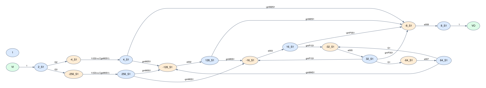

Analog filters
Conductance, capacitance, and op-amp networks, including Sallen–Key, Tow–Thomas, and notch filters.
Circuit topology → symbolic graph
Build driving-point signal-flow graphs, inspect symbolic edge gains, and trace forward paths and feedback loops across analog circuit examples.
One command-line interface selects the engine for your circuit description.
Conductance, capacitance, and op-amp networks, including Sallen–Key, Tow–Thomas, and notch filters.
Phase-specific subcircuits, switching connections, and capacitor-memory branches between phases.
OTA examples with symbolic transconductance, output conductance, and capacitance contributions.
24 directed edges, 10 forward paths, and 3 cycles. Open the report for the complete expressions behind every edge.

Start locally
Install the package on your machine, then select an example or provide your own .isc circuit. Each run creates its own graphs and HTML report.
git clone git@github.com:UMN-EDA/Driving-Point-SFG-generator.git
cd Driving-Point-SFG-generator
python3 -m venv .venv
source .venv/bin/activate
python -m pip install -r requirements.txt
python sfg.py FirstOrderSCFilter --mode analysisOpen a report to inspect its graph, symbolic gains, forward paths, and cycles. Counts below use Python graph analysis.
17 of 17 examples
| Circuit | Family | Paths | Cycles | Files |
|---|---|---|---|---|
| 1stRCLPF | Continuous Time | 1 | 0 | Input · SVG |
| Boctor_LPNotch | Continuous Time | 2 | 3 | Input · SVG |
| MultiFBBP | Continuous Time | 1 | 3 | Input · SVG |
| Sallen_Key | Continuous Time | 1 | 3 | Input · SVG |
| TowThomasBQ | Continuous Time | 1 | 5 | Input · SVG |
| TwinTNotch | Continuous Time | 2 | 4 | Input · SVG |
| NEW_TEST | Device example | 1 | 1 | Input · SVG |
| FirstOrderSCFilter | Switched Capacitor | 20 | 12 | Input · SVG |
| LowQSCBiquadFilter | Switched Capacitor | 24 | 19 | Input · SVG |
| ParasiticSensitiveIntegrator | Switched Capacitor | 2 | 6 | Input · SVG |
| SimulatedInductor | Switched Capacitor | 34 | 20 | Input · SVG |
| StraySensitiveSCIntegrator | Switched Capacitor | 2 | 6 | Input · SVG |
| 2Stage_OTA | Transistor | 2 | 9 | Input · SVG |
| 5T_OTA_Integrator_tran | Transistor | 10 | 3 | Input · SVG |
| 5T_OTA_Single_Ended_Stack_Integrator | Transistor | 6 | 9 | Input · SVG |
| CM_OTA_Integrator_tran | Transistor | 26 | 5 | Input · SVG |
| ParasiticSensitiveIntegrator_tran | Transistor | 4 | 18 | Input · SVG |
No matching examples. Try another circuit name or family.
Browse circuit graphs and download their node, edge, and image files.
Open graph gallery →Browse the path and loop outputs produced by the original C++ routines.
Open C++ results →Inspect symbolic numerator and denominator exports for the RC and OTA examples.
RC example · OTA example{kind=link}
{kind=link}
{kind=link}
{kind=link}
{kind=link}
{kind=link}
{kind=link}
{kind=link}
{kind=link}
{kind=link}
{kind=link}
{kind=link}
{kind=link}
{kind=link}
{kind=link}
{kind=link}
{kind=link}